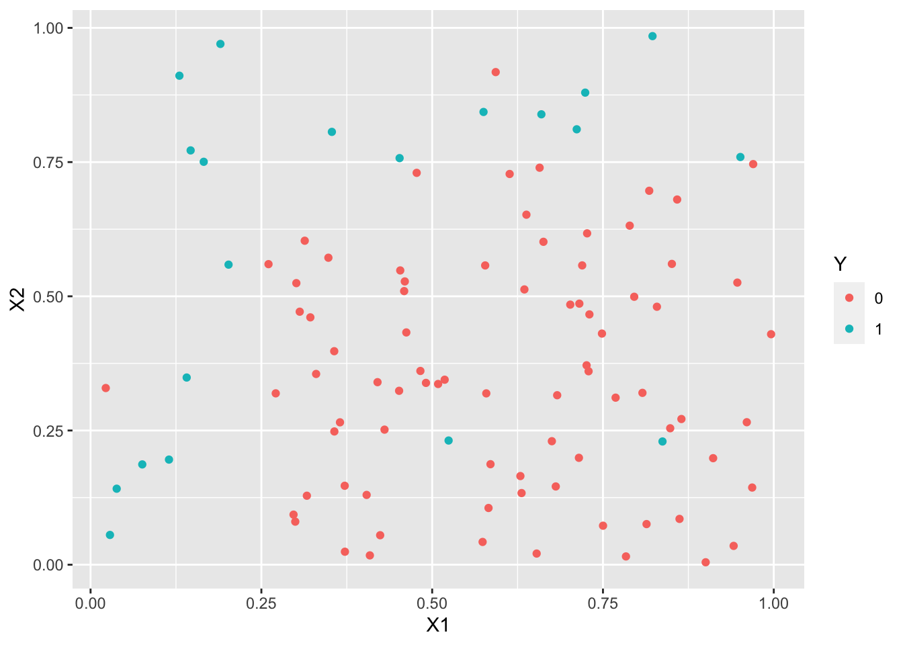
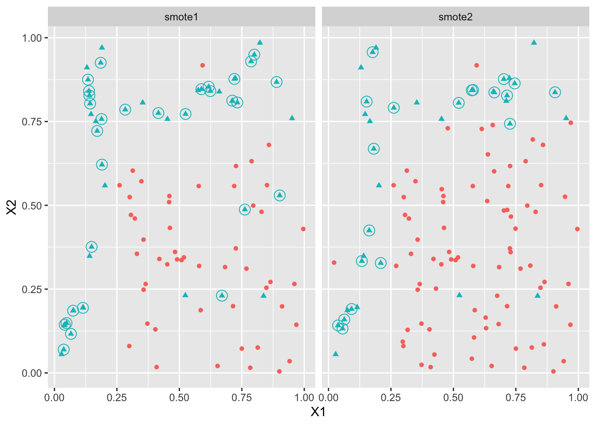
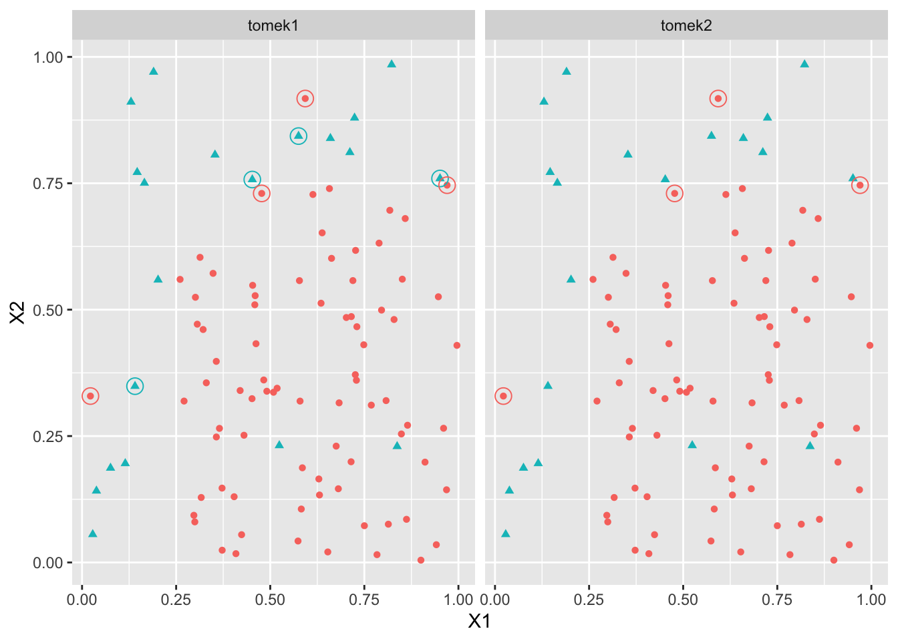

df <- data.frame(MALADE=c(208,42),
NON_MALADE=c(48,202),
FUMEUR=c("OUI","NON"))
model <- glm(cbind(MALADE,NON_MALADE)~FUMEUR,data=df,family=binomial)
coef(model)(Intercept) FUMEUROUI
-1.570598 3.036935 df <- data.frame(MALADE=c(208,42),
NON_MALADE=c(48,202),
FUMEUR=c("OUI","NON"))
model <- glm(cbind(MALADE,NON_MALADE)~FUMEUR,data=df,family=binomial)
coef(model)(Intercept) FUMEUROUI
-1.570598 3.036935 newX <- data.frame(FUMEUR=c("OUI","NON"))
rownames(newX) <- c("OUI","NON")
predict(model,newdata = newX,type="response") OUI NON
0.8125000 0.1721311 beta1_cor <- coef(model)[1]-log(0.995/0.005)
beta2 <- coef(model)[2]exp(beta1_cor+beta2)/(1+exp(beta1_cor+beta2))(Intercept)
0.02131148 exp(beta1_cor)/(1+exp(beta1_cor))(Intercept)
0.001043738 tau <- c(0.05,0.95)
ind0 <- which(df$Y==0)
ind1 <- which(df$Y==1)
choix0 <- sample(ind0, size=length(ind0)*tau[1], replace = F)
choix1 <- sample(ind1, size=length(ind1)*tau[2], replace = F)
dff <- rbind(df[choix0,], df[choix1,])mod <- glm(Y~., data=dff, family="binomial")gamma <- coef(mod)
gamma[1] - log(tau[2]/tau[1])glm(Y~. + offset(rep(log(tau[2]/tau[1]), nrow(dff))),
data=dff, family="binomial")library(tidyverse)set.seed(123458)
n1 <- 10
X11 <- runif(n1,0,0.25)
X21 <- runif(n1,0,1)
X12 <- runif(n1,0,1)
X22 <- runif(n1,0.75,1)
n2 <- 80
X13 <- runif(n2,0.25,1)
X23 <- runif(n2,0,0.75)
X1 <- c(X11,X12,X13)
X2 <- c(X21,X22,X23)
Y <- c(rep(1,2*n1),rep(0,n2)) %>% as.factor()
df <- data.frame(X1,X2,Y,id=as.character(1:100))
df$Y[c(1,16)] <- 0
#df$Y[c(41,48,59)] <- 1
df$Y[c(41,48)] <- 1
df <- df[,1:3]
ggplot(df)+aes(x=X1,y=X2)+geom_point(aes(color=Y))
library(UBL)
over1 <- RandOverClassif(Y~., dat=df)
over2 <- RandOverClassif(Y~., dat=df, C.perc=list("0"=1,"1"=2))
summary(over1$Y) 0 1
80 80 summary(over2$Y) 0 1
80 40 set.seed(1234)
smote1 <- SmoteClassif(Y~.,dat=df,k=4)
smote2 <- SmoteClassif(Y~.,dat=df,k=4,C.perc=list("0"=1,"1"=2))
summary(smote1$Y) 0 1
50 50 summary(smote2$Y) 0 1
80 40 newsm1 <- anti_join(smote1,df)
newsm2 <- anti_join(smote2,df)
newsm <- bind_rows("smote1"=newsm1,"smote2"=newsm2,.id="algo")df3 <- bind_rows("smote1"=smote1,"smote2"=smote2,.id="algo")
ggplot(df3)+aes(x=X1,y=X2,color=Y)+geom_point(aes(shape=Y),size=1.5)+facet_wrap(~algo)+
geom_point(data=newsm,shape=1,size=4) + theme(legend.position='none')
under1 <- RandUnderClassif(Y~.,dat=df)
under2 <- RandUnderClassif(Y~.,dat=df,C.perc=list("0"=0.5,"1"=1))
summary(under1$Y) 0 1
20 20 summary(under2$Y) 0 1
40 20 tomek1 <- TomekClassif(Y~.,dat=df)
tomek2 <- TomekClassif(Y~.,dat=df,rem="maj")
tomek1[[2]][1] 1 7 12 69 14 100 16 17tomek2[[2]][1] 1 69 100 16ind1 <- tomek1[[2]]
ind2 <- tomek2[[2]]
XS1 <- df[ind1,]
XS2 <- df[ind2,]
XS <- bind_rows("tomek1"=XS1,"tomek2"=XS2,.id="algo")
df5 <- bind_rows("tomek1"=df,"tomek2"=df,.id="algo")
ggplot(df5)+aes(x=X1,y=X2,color=Y)+geom_point(aes(color=Y,shape=Y),size=1.5)+facet_wrap(~algo)+
geom_point(data=XS,shape=1,size=4) + theme(legend.position='none')
P1
Y 0 1
0 468 0
1 31 1 P2
Y 0 1
0 407 61
1 4 28library(yardstick)
df <- data.frame(Y,P2)
multi_metric <- metric_set(accuracy,bal_accuracy,f_meas,kap)
multi_metric(df,truth=Y,estimate=P2,event_level = "second")# A tibble: 4 × 3
.metric .estimator .estimate
<chr> <chr> <dbl>
1 accuracy binary 0.87
2 bal_accuracy binary 0.872
3 f_meas binary 0.463
4 kap binary 0.407summary(ad.data1$Y) ad. nonad.
459 2820 ad.data1 <- ad.data1 %>%
transform(Y=fct_recode(Y,"0"="nonad.","1"="ad.")) %>%
transform(Y=fct_inseq(Y))set.seed(1234)
bloc <- sample(1:10,nrow(ad.data1),replace=TRUE)
table(bloc)bloc
1 2 3 4 5 6 7 8 9 10
309 327 329 310 358 354 304 337 342 309 score <- data.frame(matrix(0,nrow=nrow(ad.data1),ncol=3))
names(score) <- c("logit","lasso","ridge")
SCORE <- list(brute=score,over=score,smote=score,under=score,tomek=score)set.seed(4321)
library(glmnet)
score <- data.frame(matrix(0,nrow=nrow(ad.data1),ncol=3))
names(score) <- c("logit","lasso","ridge")
SCORE <- list(brute=score,over=score,smote=score,under=score,tomek=score)
for (k in 1:10){
print(k)
ind.test <- bloc==k
dapp <- ad.data1[!ind.test,]
dtest <- ad.data1[ind.test,]
X.test <- model.matrix(Y~.,data=dtest)[,-1]
ech.app <- list(norm=dapp,
over=RandOverClassif(Y~.,dat=dapp),
smote=SmoteClassif(Y~.,dat=dapp),
under=RandUnderClassif(Y~.,dat=dapp),
tomek=TomekClassif(Y~.,dat=dapp)[[1]])
mod.mat.list <- function(df){model.matrix(Y~.,data=df)[,-1]}
Y.list <- function(df) df$Y
X.app <- lapply(ech.app,mod.mat.list)
Y.app <- lapply(ech.app,Y.list)
for (j in 1:5){
print(j)
lasso <- cv.glmnet(X.app[[j]],Y.app[[j]],family="binomial")
ridge <- cv.glmnet(X.app[[j]],Y.app[[j]],family="binomial",alpha=0)
logit <- glm(Y~.,data=ech.app[[j]],family="binomial")
SCORE[[j]][ind.test,] <- data.frame(
logit=predict.glm(logit,newdata=dtest,type="response"),
lasso=as.vector(predict(lasso,newx=X.test,type="response")),
ridge=as.vector(predict(ridge,newx=X.test,type="response"))
)
}
}mat.score <- bind_rows(brutes=SCORE[[1]],
over=SCORE[[2]],
smote=SCORE[[3]],
under=SCORE[[4]],
tomek=SCORE[[5]],.id="meth") %>%
mutate(obs=rep(ad.data1$Y,5)) %>%
pivot_longer(c(logit,lasso,ridge),
names_to = "algo",values_to = "score")mat.score %>% group_by(meth,algo) %>%
roc_auc(truth = obs,score,event_level = "second") %>%
pivot_wider(-c(.metric,.estimator),
names_from = algo,values_from = .estimate)# A tibble: 5 × 4
meth lasso logit ridge
<chr> <dbl> <dbl> <dbl>
1 brutes 0.943 0.831 0.980
2 over 0.973 0.790 0.977
3 smote 0.973 0.680 0.977
4 tomek 0.950 0.763 0.979
5 under 0.956 0.787 0.964mat.score <- mat.score %>% mutate(prev=as.factor(round(score)))Accuracy :
mat.score %>%
group_by(meth,algo) %>%
accuracy(truth = obs,prev) %>%
pivot_wider(names_from = algo,values_from = .estimate) %>%
select(-(2:3))# A tibble: 5 × 4
meth lasso logit ridge
<chr> <dbl> <dbl> <dbl>
1 brutes 0.969 0.886 0.970
2 over 0.961 0.847 0.963
3 smote 0.960 0.699 0.960
4 tomek 0.969 0.818 0.970
5 under 0.954 0.808 0.955Balanced accuracy :
mat.score %>%
group_by(meth,algo) %>%
bal_accuracy(truth = obs,prev) %>%
pivot_wider(names_from = algo,values_from = .estimate) %>%
select(-(2:3))# A tibble: 5 × 4
meth lasso logit ridge
<chr> <dbl> <dbl> <dbl>
1 brutes 0.898 0.832 0.900
2 over 0.931 0.806 0.935
3 smote 0.933 0.680 0.933
4 tomek 0.896 0.797 0.900
5 under 0.921 0.792 0.899F1 score :
mat.score %>%
group_by(meth,algo) %>%
f_meas(truth = obs,prev,event_level = "second") %>%
pivot_wider(names_from = algo,values_from = .estimate) %>%
select(-(2:3))# A tibble: 5 × 4
meth lasso logit ridge
<chr> <dbl> <dbl> <dbl>
1 brutes 0.879 0.650 0.884
2 over 0.864 0.579 0.873
3 smote 0.863 0.378 0.862
4 tomek 0.876 0.542 0.882
5 under 0.843 0.529 0.837Kappa de Cohen :
mat.score %>%
group_by(meth,algo) %>%
kap(truth = obs,prev) %>%
pivot_wider(names_from = algo,values_from = .estimate) %>%
select(-(2:3))# A tibble: 5 × 4
meth lasso logit ridge
<chr> <dbl> <dbl> <dbl>
1 brutes 0.862 0.584 0.867
2 over 0.842 0.491 0.851
3 smote 0.839 0.224 0.838
4 tomek 0.859 0.440 0.866
5 under 0.816 0.422 0.811grille.score(mat.score,nom_algo="ridge",meth="norm")# A tibble: 11 × 7
seuil sens spec accuracy bal_accuracy f_meas kap
<chr> <dbl> <dbl> <dbl> <dbl> <dbl> <dbl>
1 0 1 0 0.14 0.5 0.246 0
2 0.1 0.955 0.671 0.711 0.813 0.48 0.343
3 0.2 0.932 0.745 0.771 0.839 0.533 0.416
4 0.3 0.911 0.851 0.86 0.881 0.645 0.566
5 0.4 0.885 0.918 0.913 0.901 0.74 0.69
6 0.5 0.843 0.983 0.964 0.913 0.867 0.846
7 0.6 0.797 0.991 0.964 0.894 0.861 0.841
8 0.7 0.739 0.995 0.959 0.867 0.834 0.811
9 0.8 0.672 0.997 0.952 0.835 0.796 0.77
10 0.9 0.562 0.999 0.938 0.78 0.717 0.685
11 1 0 1 0.86 0.5 NA 0 grille.score(mat.score,nom_algo="ridge",meth="over")# A tibble: 11 × 7
seuil sens spec accuracy bal_accuracy f_meas kap
<chr> <dbl> <dbl> <dbl> <dbl> <dbl> <dbl>
1 0 1 0 0.14 0.5 0.246 0
2 0.1 0.955 0.671 0.711 0.813 0.48 0.343
3 0.2 0.932 0.745 0.771 0.839 0.533 0.416
4 0.3 0.911 0.851 0.86 0.881 0.645 0.566
5 0.4 0.885 0.918 0.913 0.901 0.74 0.69
6 0.5 0.843 0.983 0.964 0.913 0.867 0.846
7 0.6 0.797 0.991 0.964 0.894 0.861 0.841
8 0.7 0.739 0.995 0.959 0.867 0.834 0.811
9 0.8 0.672 0.997 0.952 0.835 0.796 0.77
10 0.9 0.562 0.999 0.938 0.78 0.717 0.685
11 1 0 1 0.86 0.5 NA 0 grille.score(mat.score,nom_algo="ridge",meth="smote")# A tibble: 11 × 7
seuil sens spec accuracy bal_accuracy f_meas kap
<chr> <dbl> <dbl> <dbl> <dbl> <dbl> <dbl>
1 0 1 0 0.14 0.5 0.246 0
2 0.1 0.955 0.671 0.711 0.813 0.48 0.343
3 0.2 0.932 0.745 0.771 0.839 0.533 0.416
4 0.3 0.911 0.851 0.86 0.881 0.645 0.566
5 0.4 0.885 0.918 0.913 0.901 0.74 0.69
6 0.5 0.843 0.983 0.964 0.913 0.867 0.846
7 0.6 0.797 0.991 0.964 0.894 0.861 0.841
8 0.7 0.739 0.995 0.959 0.867 0.834 0.811
9 0.8 0.672 0.997 0.952 0.835 0.796 0.77
10 0.9 0.562 0.999 0.938 0.78 0.717 0.685
11 1 0 1 0.86 0.5 NA 0